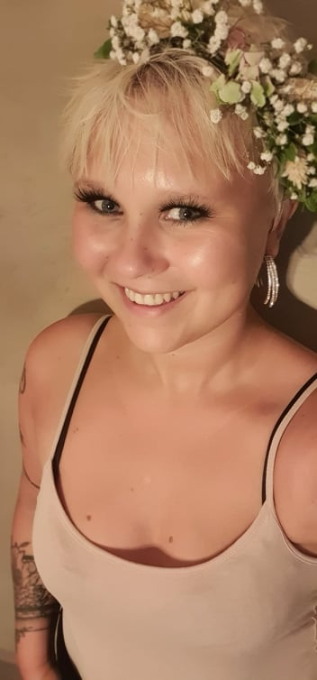

In my years of primary school I was always called the dreamer. I was the girl looking out the window, studying the beauty of the outside while illustrating comics. No surprise to anyone Art came to be my favourite subject in school. After a long day at school I would come home and watch cartoons, all while creating my own characters on paper. When High School approached I decided to study a year abroad in Arizona, USA. While there I had both art and drama class as part of my curriculum as well as both art and drama club after school.
For a while when University came along I chose the typical educational route towards jobs like engineering, but quickly realised that I needed a bigger creative outlet. I started studying 3D and Animation at Kristiania University College for two years before moving to Derby one year to finish my BA of Arts in Animation at The University of Derby. While studying abroad I also had more focus on Illustration and frame-by-frame animation. Due to covid making it nearly impossible for anyone new to enter the creative line of work, I thought I could start some courses in webdesign so that I could combine the two and make myself even more of an asset. This was when I started studying FrondEnd Development which is also a form for design at Noroff, an online college.
All this studying and dreaming has today made me the perfect potato for your team.
Familiar softwares:
Photoshop, AfterEffects, Procreate, Cinema4D, Zbrush, SubstancePainter, Maya, Visual Studio Code, AdobeXD, some Illustrator & Audition.